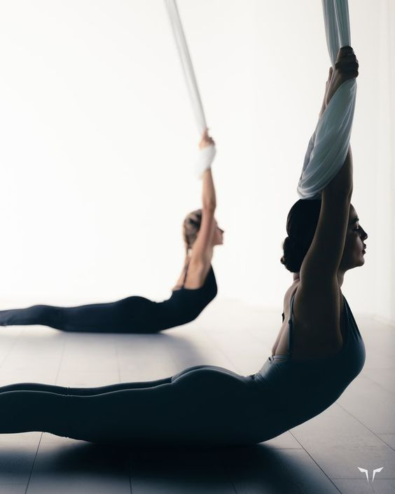
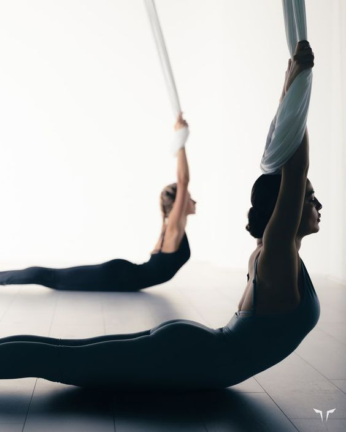

Benefici per la salute
Lo yoga aereo non è stato studiato con studi clinici . Prove aneddotiche indicano che facilitando la flessione e l’allungamento di tutto il corpo durante l’esercizio, i muscoli e le articolazioni saranno rafforzati e riabilitati e la colonna vertebrale decompressa mentre il corpo pende liberamente. Lo yoga in generale e lo yoga aereo in particolare sono promossi come benefici per la salute emotiva, psicologica e spirituale.
 
